Single-sample analysis
Source:vignettes/06_Single-sample_analysis.Rmd
06_Single-sample_analysis.RmdOverview
This vignette presents a single-sample workflow for characterizing
infection-associated niches with STID. Starting from
expanded niche metadata, the workflow evaluates spatial context, cell
composition, aggregation, colocalization, transcriptional programs,
cell-cell communication, and host-pathogen associations within selected
niche regions.
This vignette covers:
- constructing a single-sample niche object from expanded niche metadata;
- adding optional tissue-layer or spatial-context annotations;
- quantifying niche composition, aggregation, colocalization, and spatial gradients;
- identifying niche-associated genes and enriched pathways;
- inferring cell-cell communication, regulatory networks, and host-pathogen associations.
Note: Before running the workflow, update the input
STIDobject, niche metadata key, sample identifier, ROI columns, annotation columns, gene sets, reference database paths, pathogen gene prefix, plotting colors, and output group names to match the dataset under analysis.

Overview of single-sample niche analysis.
Prerequisites
The core workflow uses tidyverse, Seurat,
and STID. Downstream sections additionally require
resources such as CellChat, NicheNet, BLAST,
ligand-receptor networks, and organism-specific STRING files. Prepare
these dependencies before running the corresponding analyses.
Example data
This example uses the expanded foci-type niche object generated by
the infection-associated niche-identification workflow. Here,
STID_obj_expand contains expanded niche boundaries for the
AE dataset, and the analysis focuses on sample DPI_4_2.
Note: Replace
STID_obj_expand,M2_NicheExpand_CE,DPI_4_2,batch,anno, and ROI-related columns with the corresponding object name, metadata keys, sample identifier, and annotation columns in your dataset.
niche_key <- "Niche"
expanded_niche_key <- "M2_NicheExpand_CE"
example_sample_id <- "DPI_4_2"
celltype_column <- "anno"
sample_column <- "batch"Add spatial-context annotations
Spatial-context annotations can be added before constructing the single-sample niche object. In this example, liver zonation is represented by nine periportal-to-pericentral layers and then collapsed into three broader zones.
Note: Replace
geneset_list,Periportal,Pericentral,ROI_region, coordinate columns, and plotting colors with dataset-specific variables. If spatial-context annotations are already available, skip this step and pass the existing metadata key toCreateSingleSampNiche().
STID_obj_expand <- SpotDetect_Geneset(
STID_obj_expand,
geneset_list = geneset_list,
score_method = "MeanExp",
n_iter = 5,
nbin = 24,
seed = 10,
PosThres_prob = 0,
PosThres_score = 0,
pt_size = 0.25,
col = COLOR_DIS_CON,
black_bg = FALSE,
blur_method = NULL,
plot_method = "single",
grp_nm = "CE_detect_geneset_stratify"
)
expanded_meta <- GetMetaData(
STID_obj_expand,
meta_key = expanded_niche_key,
add_coord = TRUE
)[[1]]
expanded_meta <- expanded_meta %>%
rownames_to_column(var = "cell_id") %>%
group_by(.data[[sample_column]]) %>%
mutate(PV_CV = Periportal - Pericentral) %>%
mutate(label = cut_number(PV_CV, n = 9, labels = FALSE)) %>%
mutate(label9 = paste0("Layer_", as.numeric(label))) %>%
mutate(
label3 = case_when(
label9 %in% c("Layer_1", "Layer_2", "Layer_3") ~ "Pericentral",
label9 %in% c("Layer_4", "Layer_5", "Layer_6") ~ "Midzone",
TRUE ~ "Periportal"
),
label3 = factor(label3, levels = c("Pericentral", "Midzone", "Periportal")),
merge_label = if_else(ROI_region == "edge", "edge", label9, missing = label9)
) %>%
ungroup() %>%
column_to_rownames(var = "cell_id")
STID_obj_expand <- AddMetaData(
STID_obj = STID_obj_expand,
meta_key = "hep_layer9",
add_data = expanded_meta
)
LAYER_COLORS <- c(
"red",
rev(c(
"#440154FF", "#472D7BFF", "#3B528BFF", "#2C728EFF", "#21908CFF",
"#27AD81FF", "#5DC863FF", "#AADC32FF", "#FDE725FF"
))
)
Plot_Spatial(
plot_data = expanded_meta,
x_colnm = "x",
y_colnm = "y",
group_by = "merge_label",
facet_grpnm = sample_column,
datatype = "discrete",
col = list(dis = LAYER_COLORS, con = NULL),
pt_size = 1.1,
vmin = NULL,
vmax = "p99",
title = NULL,
subtitle = NULL,
black_bg = FALSE
)Construct a single-sample niche object
CreateSingleSampNiche() organizes niche, edge, center,
and bystander-region metadata for downstream analyses.
AddSSNicheCells() then adds selected cell-level or
spatial-context labels to the single-sample niche object.
Note: Update
meta_key,ROI_type,pos_colnm,center_colnm,edge_colnm,all_label_colnm,all_dist_colnm, andother_colnmto match the metadata generated in the niche-identification workflow.
STID_obj_SS <- CreateSingleSampNiche(
STID_obj = STID_obj_expand,
niche_key = niche_key,
meta_key = list(c(expanded_niche_key, "hep_layer9")),
ROI_type = "ROI",
pos_colnm = "ROI_label",
center_colnm = "ROI_center",
edge_colnm = "ROI_edge",
all_label_colnm = "All_ROI_label",
all_dist_colnm = "All_Dist2ROIcenter",
other_colnm = "label9",
description = NULL
)
STID_obj_SS <- AddSSNicheCells(
STID_obj = STID_obj_SS,
meta_key = "hep_layer9",
select_colnm = "label3",
niche_key = niche_key
)Quantify tissue and cell-type composition
CalSampComp() summarizes the relative abundance of
tissue layers or cell types across niche regions. Apply the same
function to different annotation systems by changing
group_by.
Note: Update
group_by,loop_id, and color vectors according to the metadata columns, sample identifiers, and annotation categories in your dataset.
# Tissue-layer composition
CalSampComp(
STID_obj = STID_obj_SS,
niche_key = niche_key,
group_by = "label9",
loop_id = "LoopAllSamp",
col = rev(c(
"#440154FF", "#472D7BFF", "#3B528BFF", "#2C728EFF", "#21908CFF",
"#27AD81FF", "#5DC863FF", "#AADC32FF", "#FDE725FF"
)),
return_data = FALSE
)
# Cell-type composition
CalSampComp(
STID_obj = STID_obj_SS,
niche_key = niche_key,
group_by = celltype_column,
loop_id = "LoopAllSamp",
col = col_lasso,
return_data = FALSE
)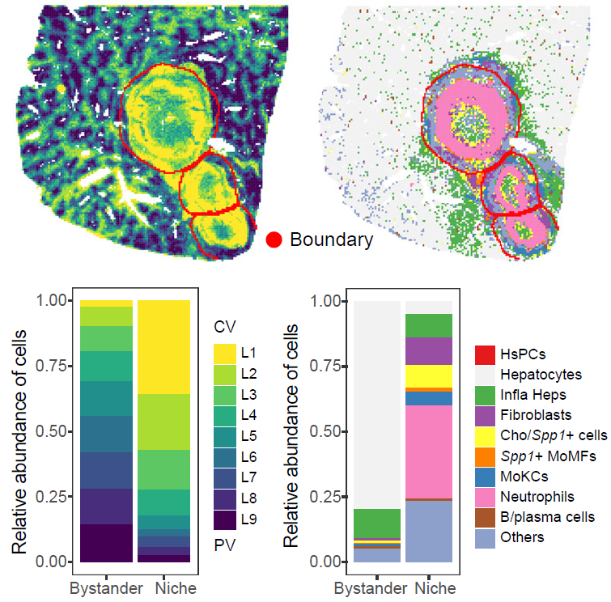
Tissue-layer and cell-type composition within single-sample niches.
Cell aggregation index
CalSampCAI() measures whether cells of the same type
form local aggregates within niche regions. The analysis uses
nearest-neighbor distances among same-type cells and summarizes both
regional aggregation scores and the fraction of cells located in
connected aggregates.
Note: Set
k_neighborsaccording to spatial geometry and resolution. Square-grid data commonly use eight neighbors, whereas hex-grid data commonly use six. Updatemin_agg_size,dist_thres,group_by, andloop_idaccording to the expected aggregate size.
cell_aggregation <- CalSampCAI(
STID_obj = STID_obj_SS,
niche_key = niche_key,
group_by = celltype_column,
loop_id = "LoopAllSamp",
k_neighbors = 8,
min_agg_size = 10,
dist_thres = 1,
col = col_lasso
)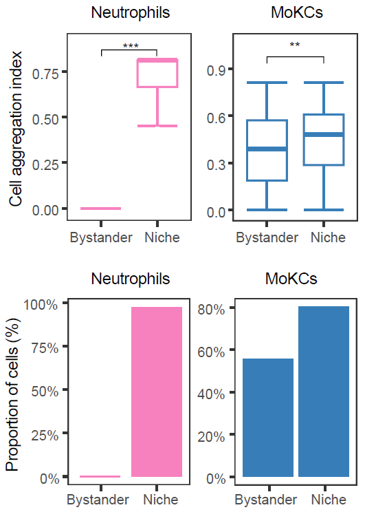
Cell aggregation within single-sample niches.
Colocalization analysis
CalSampCoLoc() evaluates spatial colocalization between
cell types or gene-expression features. Proximity-based analysis
summarizes neighborhood enrichment, whereas expression-based analysis
estimates whether neighboring features improve prediction of a target
feature.
Note: Update
group_by,loop_id,method, andmistyR_paramsaccording to the feature type, sample identifier, and spatial scale of interest. Thesquidpyoption requires a Python environment accessible throughreticulate.
cell_colocalization <- CalSampCoLoc(
STID_obj = STID_obj_SS,
niche_key = niche_key,
group_by = celltype_column,
loop_id = example_sample_id,
method = "mistyR",
mistyR_params = c(15, 10),
return_data = TRUE
)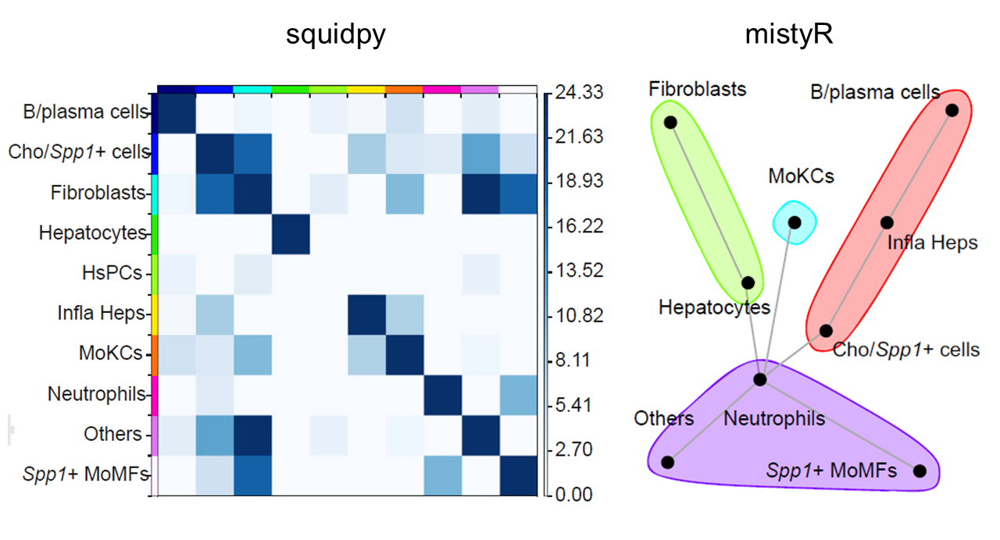
Spatial colocalization analysis within single-sample niches.
Selected cell-type or gene-pair colocalization patterns can be displayed directly in spatial coordinates.
Note: Replace
group_use,features, andloop_idwith cell-type or gene pairs relevant to the biological question.
# Cell-type pair
Plot_SpatialCoLoc(
STID_obj = STID_obj_SS,
niche_key = niche_key,
group_by = celltype_column,
group_use = c("Neutrophils", "Spp1+ MoMFs"),
loop_id = "LoopAllSamp"
)
# Gene pair
Plot_SpatialCoLoc(
STID_obj = STID_obj_SS,
niche_key = niche_key,
group_by = NULL,
group_use = NULL,
features = c("Ccl3", "Ccr1"),
loop_id = "LoopAllSamp"
)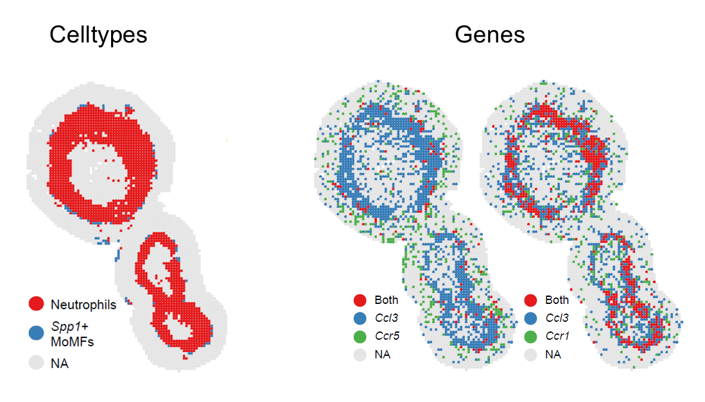
Spatial visualization of selected colocalized cell types or genes.
Cell-composition gradient analysis
Plot_DistLine_Ratio() summarizes how cell-type
proportions change with distance from niche centers. Cells are binned
along the niche-to-bystander axis, and fitted trends are used to
visualize composition shifts across niche boundaries.
Note: Update
celltypes,group_by,loop_id,facet_grpnm,meta_key, andcoord_interval_ratioaccording to the cell annotations, sample identifier, metadata key, and spatial scale used in your analysis.
Plot_DistLine_Ratio(
STID_obj = STID_obj_SS,
celltypes = c(
"Hepatocytes", "Spp1+ MoMFs", "Neutrophils",
"Fibroblasts", "Cho/Spp1+ cells"
),
group_by = "anno",
loop_id = "DPI_4_2",
facet_grpnm = "batch",
meta_key = meta_key,
coord_interval_ratio = 8
)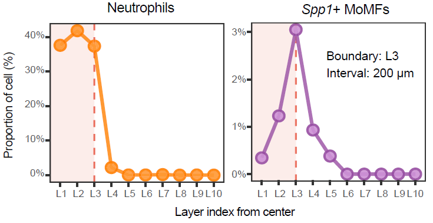
Distance-dependent niche-associated gradients.
Differential gene expression analysis
CalSampDEGs() identifies genes associated with niche
regions globally or within selected cell types. This example compares
niche and non-niche regions using a Wilcoxon rank-sum test with
Benjamini-Hochberg correction.
Note: Update
assay_id,layer_id,group_by,group_value, filtering thresholds, andremove_genesaccording to the input object, species, and analysis objective.
SS_DEGs <- CalSampDEGs(
STID_obj = STID_obj_SS,
niche_key = niche_key,
assay_id = "Spatial",
layer_id = "counts",
loop_id = "LoopAllSamp",
padj_thres = 0.05,
logfc_thres = 1,
adjust_method = "BH",
col = col_lasso2,
group_by = celltype_column,
group_value = c("Infla Heps", "Fibroblasts", "Neutrophils", "MoKCs"),
remove_genes = grep("^Gm", rownames(STID_obj_SS), value = TRUE)
)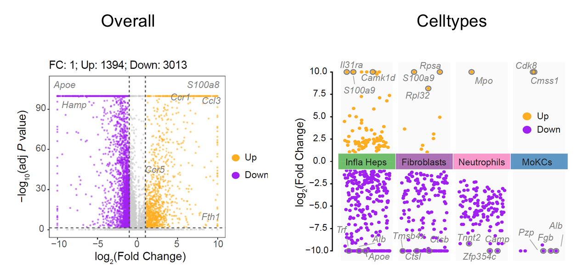
Differentially expressed genes associated with single-sample niches.
Gene set enrichment analysis
GeneEnrichment() tests functional enrichment using
differential genes or user-supplied up- and down-regulated gene sets.
This example performs Gene Ontology and KEGG over-representation
analysis.
Note: Replace
up_geneanddown_genewith genes derived from the differential expression results. Updatemethod,go_ont, and organism-specific annotation settings to match the species and database used in your analysis.
enrichment_results <- GeneEnrichment(
STID_obj = STID_obj_SS,
DEGs = NULL,
up_gene = up_gene,
down_gene = down_gene,
method = "GO_KEGG",
go_ont = "BP",
return_data = TRUE
)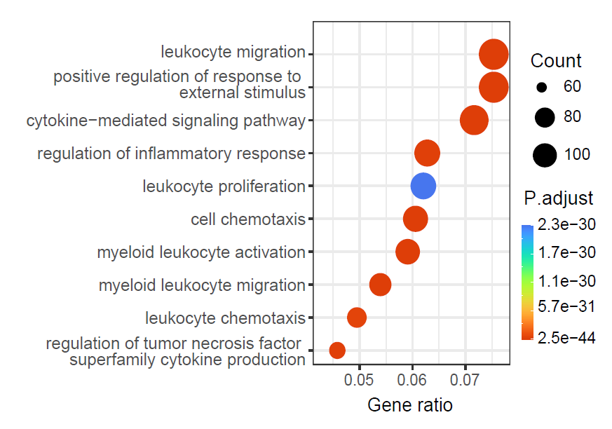
Functional enrichment of niche-associated genes.
Cell–cell communication analysis
CalSampCellComm() integrates ligand-receptor expression
with spatial constraints to infer niche-associated communication. The
output summarizes signaling pathways, sender and receiver cell types,
and ligand-receptor pairs within niche regions.
Note: Update
group_by,assay_id,layer_id,loop_id,interaction.range, spatial scaling parameters, and output directory according to the spatial platform, bin size, and communication model.
cell_communication <- CalSampCellComm(
STID_obj = STID_obj_SS,
niche_key = niche_key,
group_by = NULL,
assay_id = "Spatial",
layer_id = "counts",
loop_id = "LoopAllSamp",
col = col_lasso2,
is_Spatial = TRUE,
spatial.factors = NULL,
interaction.range = 250,
return_data = TRUE,
grp_nm = NULL,
dir_nm = "M3_CalSampCellComm"
)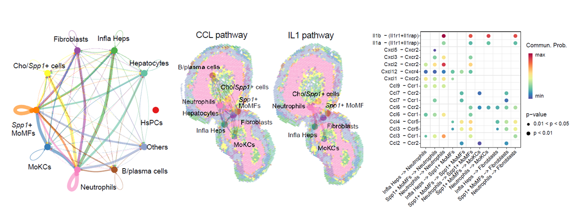
Cell-cell communication within single-sample niches.
Gene regulatory network analysis
CalSampGRN() prioritizes candidate ligands and
downstream target genes using ligand-receptor and ligand-target priors.
This analysis links sender-cell ligands to receiver-cell regulatory
programs in the niche microenvironment.
Note: Update NicheNet reference paths, species-specific reference files, sender and receiver cell types,
target_features, expression thresholds, top-ligand and top-target settings, andloop_id. Use local reference files for reproducible analyses.
ligand_target_matrix <- readRDS(
"./inputdata/Demo/CalSampGRN/NicheNet_V2/ligand_target_matrix_nsga2r_final_mouse.rds"
)
lr_network <- readRDS(
"./inputdata/Demo/CalSampGRN/NicheNet_V2/lr_network_mouse_21122021.rds"
)
weighted_networks <- readRDS(
"./inputdata/Demo/CalSampGRN/NicheNet_V2/weighted_networks_nsga2r_final_mouse.rds"
)
gr_network <- readRDS(
"./inputdata/Demo/CalSampGRN/NicheNet_V2/gr_network_mouse_21122021.rds"
)
sig_networks <- readRDS(
"./inputdata/Demo/CalSampGRN/NicheNet_V2/signaling_network_mouse_21122021.rds"
)
ligand_tf_matrix <- readRDS(
"./inputdata/Demo/CalSampGRN/NicheNet_V2/ligand_tf_matrix_nsga2r_final_mouse.rds"
)
ref_data <- list(
ligand_target_matrix = ligand_target_matrix,
lr_network = lr_network,
weighted_networks = weighted_networks,
gr_network = gr_network,
sig_networks = sig_networks,
ligand_tf_matrix = ligand_tf_matrix
)
DEGs_gene <- SS_DEGs %>%
filter(avg_log2FC > 1, p_val_adj < 0.05) %>%
pull(gene) %>%
unique()
regulatory_network <- CalSampGRN(
STID_obj = STID_obj_SS,
niche_key = niche_key,
group_by = NULL,
ref_data = ref_data,
sender_celltypes = c("Infla Heps", "Neutrophils", "Spp1+ MoMFs"),
receiver_celltypes = c("Neutrophils", "Spp1+ MoMFs", "MoKCs", "Fibroblasts"),
target_features = DEGs_gene,
expression_pct = 0.1,
top_ligand_num = 10,
top_target_num = 10,
loop_id = example_sample_id,
return_data = TRUE
)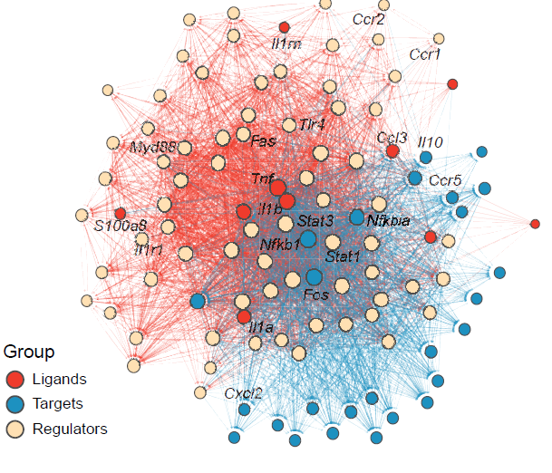
Ligand-driven regulatory networks within single-sample niches.
Host–pathogen interaction analysis
This section evaluates host-pathogen relationships at gene and protein levels. Gene-level analysis identifies host genes spatially correlated with pathogen gene abundance, whereas protein-level analysis prioritizes candidate associations supported by sequence similarity and host protein-interaction networks.
Host-pathogen gene correlation
CalSampGeneCor() quantifies correlations between
pathogen-derived genes and host genes within selected niche regions.
This analysis prioritizes host genes whose spatial expression is
associated with pathogen burden.
Note: Update the pathogen gene prefix in
pattern, top-pathogen-gene number, host target genes, feature column names, correlation method, assay and layer names, andloop_idaccording to the dataset and pathogen annotation scheme.
high_exp_pathogen_genes <- GetTopGenes(
STID_obj_SS,
top_n = 7,
pattern = "EmuJ-",
grp_by_samp = FALSE,
grp_by_celltype = FALSE,
assay_id = "Spatial",
layer_id = "counts"
)
gene_correlations <- CalSampGeneCor(
STID_obj = STID_obj_SS,
loop_id = example_sample_id,
niche_key = niche_key,
p.features = high_exp_pathogen_genes,
h.features = DEGs_gene,
p.feature_colnm = "all_gene_nCount(sum)",
method = "spearman",
assay_id = "Spatial",
layer_id = "counts",
return_data = TRUE
)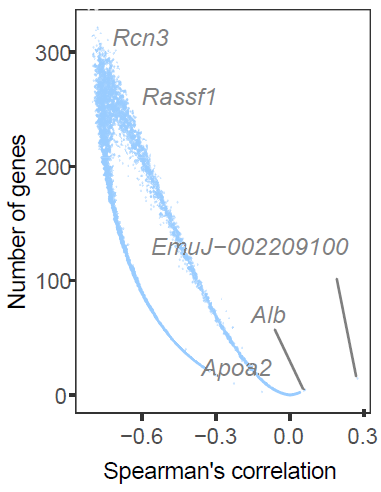
Host-pathogen gene associations within single-sample niches.
Host-pathogen protein association
CalSampPPI() integrates pathogen and host protein FASTA
files, symbol-to-protein mappings, BLAST alignment, and STRING networks
to infer candidate host-pathogen protein associations.
Note: Update FASTA files, symbol-to-protein mapping files, BLAST parameters, STRING version, score thresholds, pathogen features, and host features according to the organisms, protein identifiers, and confidence criteria used in your analysis.
pathogen_fasta_path <- "./inputdata/Demo/CalSampPPI/EmuJ_protein.fa"
pathogen_symbol2protein_path <- "./inputdata/Demo/CalSampPPI/EmuJ_symbol2protein.txt"
host_fasta_path <- "./inputdata/Demo/CalSampPPI/mouse_protein.fa"
host_symbol2protein_path <- "./inputdata/Demo/CalSampPPI/mouse_symbol2protein.txt"
protein_associations <- CalSampPPI(
STID_obj = STID_obj_SS,
p.fasta_path = pathogen_fasta_path,
h.fasta_path = host_fasta_path,
p.symbol2protein_path = pathogen_symbol2protein_path,
h.symbol2protein_path = host_symbol2protein_path,
p.features = high_exp_pathogen_genes,
h.features = DEGs_gene,
BLAST_tool = "blastp",
dbtype = "prot",
BLAST_args = "-evalue 1e-10 -max_target_seqs 5 -max_hsps 50 -num_threads 4",
BLAST_fil_args = "pident > 40, evalue < 1e-10, bitscore > 100, length > 100",
version_STRING = "12.0",
score_thre_only = 100,
score_thre_all = 800
)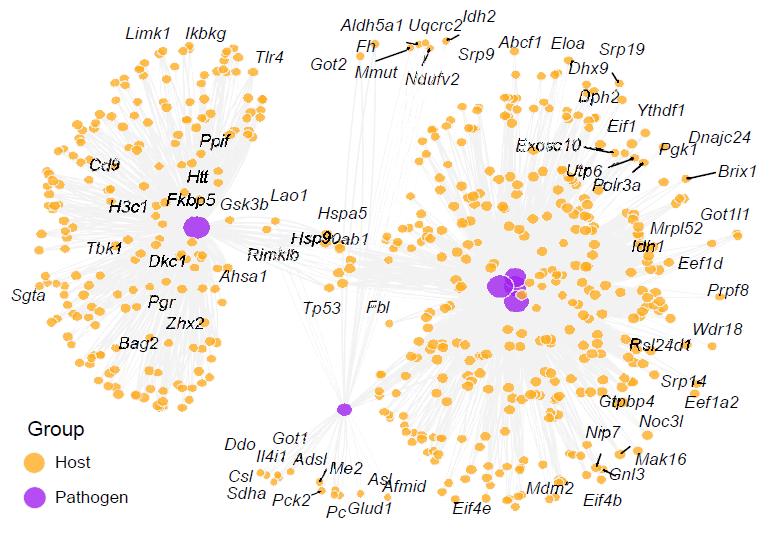
Host-pathogen protein association network inferred from sequence similarity and STRING interactions.
Notes
- Use metadata keys generated by the niche-identification workflow to construct the single-sample niche object.
- Confirm that ROI labels, center labels, edge labels, distance columns, tissue-layer labels, and cell-type annotations are present before downstream analysis.
- Select neighborhood size, distance thresholds, and bin numbers according to spatial resolution and expected niche size.
- Use dataset-specific gene sets, cell types, ligand-receptor references, and host-pathogen protein resources.
- Interpret statistical summaries together with spatial plots.
Session information
sessionInfo()
#> R version 4.2.0 (2022-04-22 ucrt)
#> Platform: x86_64-w64-mingw32/x64 (64-bit)
#> Running under: Windows 10 x64 (build 22000)
#>
#> Matrix products: default
#>
#> locale:
#> [1] LC_COLLATE=Chinese (Simplified)_China.utf8
#> [2] LC_CTYPE=Chinese (Simplified)_China.utf8
#> [3] LC_MONETARY=Chinese (Simplified)_China.utf8
#> [4] LC_NUMERIC=C
#> [5] LC_TIME=Chinese (Simplified)_China.utf8
#>
#> attached base packages:
#> [1] stats graphics grDevices utils datasets methods base
#>
#> loaded via a namespace (and not attached):
#> [1] digest_0.6.35 R6_2.6.1 jsonlite_1.8.8 lifecycle_1.0.5
#> [5] evaluate_1.0.1 cachem_1.1.0 rlang_1.1.7 cli_3.6.5
#> [9] rstudioapi_0.15.0 fs_1.6.3 jquerylib_0.1.4 bslib_0.8.0
#> [13] ragg_1.3.0 rmarkdown_2.29 pkgdown_2.2.0 textshaping_0.3.6
#> [17] desc_1.4.3 tools_4.2.0 htmlwidgets_1.6.4 yaml_2.3.10
#> [21] xfun_0.49 fastmap_1.2.0 compiler_4.2.0 systemfonts_1.0.4
#> [25] htmltools_0.5.8.1 knitr_1.49 sass_0.4.9